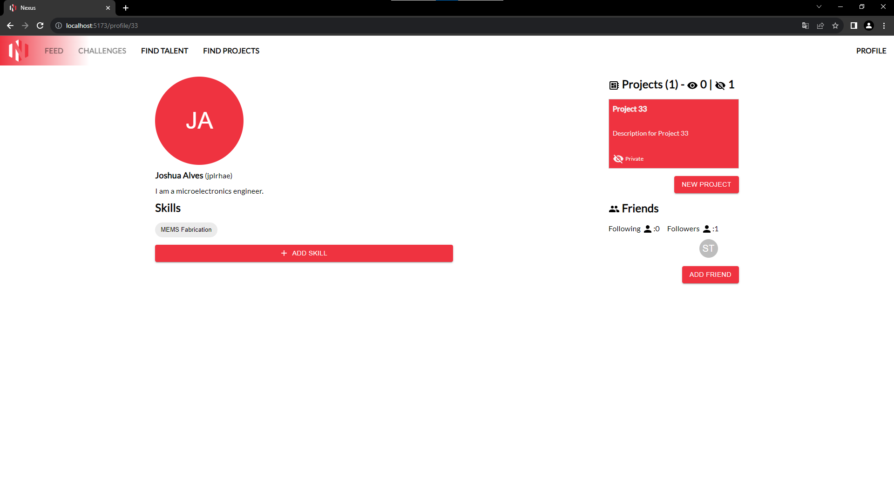

Hackathon Samba Meets Waltz
3ª lugar
Prêmio: R$2.000,00
Data: 05/09/2023
Equipe: Gustavo Antunes Voltolini, Rafael Mendes de Carvalho e Joshua Patrick Loesch Alves
Desafio proposto
Busca de talentos para especialistas em microeletrônica e semicondutoresEmpresas austríacas especializadas em microeletrônica e semicondutores buscam talentosos colaboradores brasileiros para integrar suas equipes. Neste desafio hackathon, os participantes precisam criar uma solução tecnológica que auxilie essas empresas austríacas na identificação desses profissionais, aqui no país.
Solução apresentada
NexusNexus conecta talentos no campo de microeletrônica e semicondutores a empresas em busca de seus talentos, enquanto também oferece uma comunidade ao redor deles. O usuário que procura conhecimento no campo, exposição a empresas ou contribuir para a comunidade pode acessar o aplicativo por meio de qualquer navegador.
O usuário pode visualizar e criar novos projetos, adicionar novas etiquetas de habilidades, seguir outros usuários, ver seus seguidores e quem eles seguem, além de acessar seus perfis. Os projetos podem ser acessados pela comunidade se forem públicos, seja acessando o perfil de um usuário ou pesquisando por um projeto específico por meio do link "Encontrar Projetos" na barra de aplicativos. A comunidade é fortalecida à medida que os usuários criam projetos.
Como uma empresa em busca de talentos, elas podem procurar por projetos da comunidade que tenham etiquetas de habilidades ou através da página "Encontrar Talentos". Esta página possibilita a busca por usuários através de etiquetas de habilidades, permitindo às empresas identificar usuários que têm as habilidades que estão procurando.

API desenvolvida em C# ASP .NET Core 7, que alimenta e consome o banco de dados SQL.
Interface frontend desenvolvida com React e Tailwind.
Perfil:  Habilidades Projetos:
Projetos:
 Talentos:
Talentos: